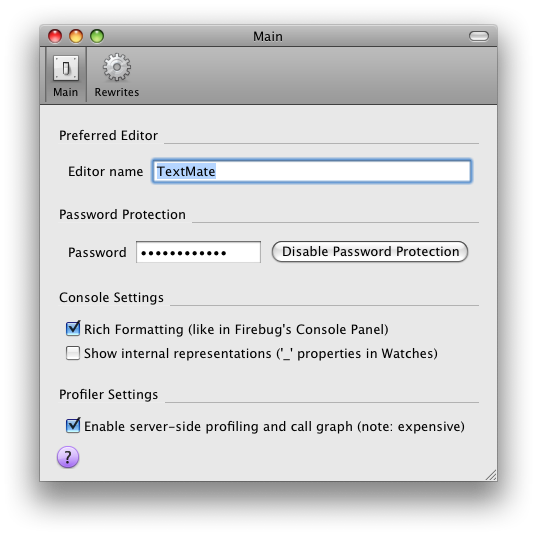
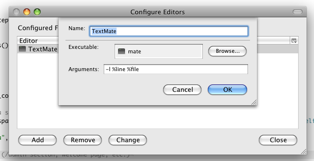
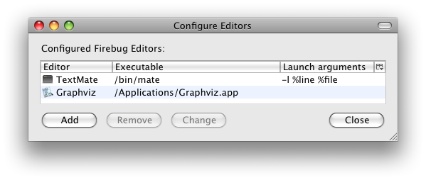
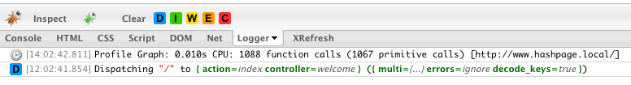
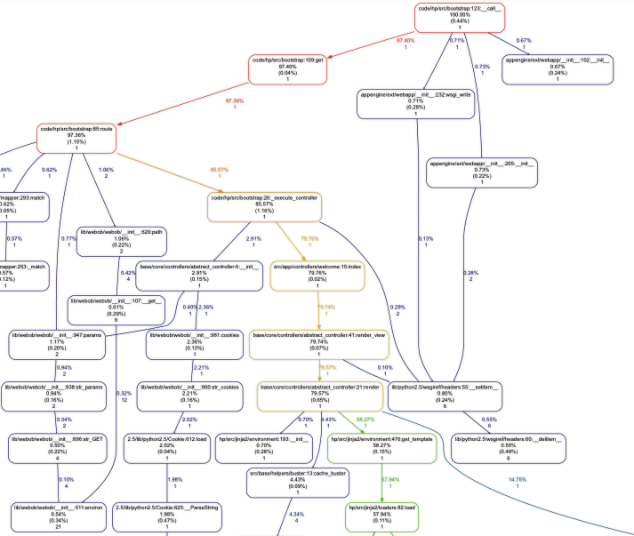

Firefox
Firefox Addon
- Your logging messages are displayed right under your fingerprints in Firebug
- Support for rich-text logging (logged objects are sent as JSON object, you may drill down their structure)
- Support for Python and PHP
- Support for exceptions and backtrace visualization
- Ready as WSGI middleware and Django middleware
- Support for profiling graphs
- Support for advanced features:
- open in Text Editor integration
- AppStats for GAE
- production paths remapping
- password protection
- logging proxy support
- and more ...
Compatibility
Both Firefox and Firebug are moving targets. Please make sure you use compatible versions. I'm unable to test all possible combinations.
- Version 1.2 works with Firebug 1.4 - 1.9 + Firefox 3.5 - 11.0
show compatibility of older versions ↓
Python
Prior to installing check how to install FireLogger Addon. You definitely need Firebug 1.4 or higher. You must also install a Firefox Addon called FireLogger.
Installation
pip install FirePython
Usage
- Django: After installation, enable middleware by adding its path to
MIDDLEWARE_CLASSES: firepython.middleware.FirePythonDjango. - WSGI: After installation, enable middleware
firepython.middleware.FirePythonWSGI. - Custom: Look for inspiration at middleware.py
Real-world examples
- FirePython added to Bloog (blog engine for GAE)
- FirePython added to DryDrop (GAE hosting engine for GitHubbers && !Pythonists)
- FirePython added to Pyxer (Python web framework)
FAQ
logging.debug("hello world!") outputs nothing, what's wrong?
The default behavior of the logging module is to only output message from level INFO and up. Run "logging.getLogger().setLevel(logging.DEBUG)" to see all messages.
Is there something similar for PHP?
Check out FireLogger for PHP, you may also want to checkout an alternative logging tool, FirePHP
Is there something similar for Ruby?
Nope. I'd like to have one, but haven't found time to write server-side support. You are welcome to hack it!
How can I change the name of the default logger?
logging.getLogger().name = "my logger"
How can I open preferences?
Switch to the Logger panel and look at Firebug's toolbar. There is a green bug icon. It's a menu button!


Clicking on source-file links in Logger panel does nothing. How can I open trace-back sources in TextMate?
Go to Firebug Menu -> Open With Editor -> Configure editors ... like this: 
I was unable to download/install the FireLogger extension from addons.mozilla.org. Can you package latest version for me?
Some other people have reported this problem too. You may try this workaround.
How can I see the Python profiling graph?
- enable this feature in FireLogger preferences
- set up an editor in External Editors in Firebug called "Graphviz" (the name is important!). It should be the path to the executable of a viewer for .dot graphs.
- reload the page and you should see an info log line containing profiling info. Clicking on the line launches the configured Graphviz viewer (a filename will be passed as the first parameter) 


How can I use AppStats support?
If you are on a production site, make sure you are logged in as a project admin. Also don't forget to enable support in FireLogger's preferences.
When I start Firefox and the page loads I don't see any log records, what is wrong?
The initial page content was probably loaded from cache. Refresh your page and you should be ok.
My page does multiple AJAX requests to the same URL and I see logs for the first response, but not for others. Am I missing something?
There is a bug in Firebug 1.4 which calls onResponse multiple times under some circumstances. That was very annoying, so I did a HACK and now test for URL uniqueness in FireLogger. This will unfortunately filter out your multiple AJAX requests. Let's hope for fixes on Firebug side.
PHP
Requires PHP 5.3 or higher!
Download firelogger.php here
require 'firelogger.php';
flog("Hello world!");
FAQ
What is the difference between FireLogger and FirePHP?
I initially wrote FireLogger for Python because I was doing some Google App Engine development. Recently, I was asked to do some PHP development. I've tried FirePHP, it worked for me, but it wasn't "pixel perfect" enough to fit my personal taste :-) I'm a javascript who's guy quite opinionated about tools. I wanted flexible dirty logging functionality which is capable of eating whatever I throw into it (like firebug's
console.log). I also prefer to have server-side a logger console separated from javascript console in Firebug. I prefer reusing Firebug's internal components for inspecting variables. FireLogger has the same look & feel as the javascript console (you can drill down into watches as in Firebug, same fonts and colors, etc.). FireLogger also has some advanced features which may be handy (password protection, "open in text editor" and production path remapping).
Is there something similar for Python?
Check out FireLogger for Python
Is there something similar for Ruby?
Nope. I'd like to have one, but didn't find time to write server-side support. You are welcome to hack it!
Clicking on source-file links in Logger panel does nothing. How can I open trace-back sources in TextMate?
Go to Firebug Menu -> Open With Editor -> Configure editors ... like this:
I was unable to download/install FireLogger extension from addons.mozilla.org. Can you package latest version for me?
Some other people reported this problem too. You may try this workaround.
When I start Firefox and the page loads I don't see any log records. What's wrong?
This is Firefox optimization. After starting, Firefox brings the browser state to the same point where it was when you closed it (no network activity at all). Refresh your page and you should be ok.
ColdFusion
Please follow documentation on a separate homepage.
Changelog
FireLogger Firefox Addon
v1.2 (14.01.2012):
- do not send X-FireLogger header when Firebug's Logger panel is disabled
- updated compatibility with Firebug 1.9
- marked as compatible with Firefox 11.*
v1.1 (17.08.2011):
- compatibility fixes for Firebug 1.8.1 and Firefox 6.*
- using native Firefox's JSON parser (faster)
- using nsILoginManager for storing site-protection password (safer)
v1.0 (30.05.2011):
- compatibility fixes for Firebug 1.7 (major refactoring to satisfy new AMO rules)
- fix bug when list of rewrite rules was not populated after opening preferences window
v0.9 (25.10.2010):
- compatibility fixes for Firebug 1.5.4, 1.6 and alpha 1.7
- timestamp hidden under clock symbol
- each row shows short version of file path
- hovering over file paths shows full paths
- PHP-related improvements
v0.8 (11.02.2010):
v0.7 (24.08.2009):
- fixed subtle bug when some log records with structs containing null values were not displayed
- removed hack fighting duplicate requests
- every batch of log records is prepended with ticket displaying request url
- added toggle button to persist panel content between refreshes
- rewriter correctly registers under Firebug namespace (fixed some bugs when detaching firebug panel)
- usability: expand root item in watches in case there is only one root item
v0.6 (18.08.2009)
- support for PHP (firelogger.binaryage.com)
- fixed bug when warning about disabled console and net panel was not displayed
- fixed broken "Open in external editor" functionality (FB1.5)
- compatibility with FB1.4.2
- compatibility with alpha FB1.5
v0.5 (28.06.2009)
- compatibility with Firebug 1.4
v0.4 (30.03.2009)
- profiling graphs for Python (WSGI) [bslatkin]
v0.3 (16.03.2009)
- compatibility with Firebug 1.2
- password protection for production site
- path rewrite functionality
- console supports rich formatting of python log messages
- Firefox Addon detached as a separate project FireLogger
- option for hiding internal reprs of exported objects
v0.2 (24.11.2008)
- fixed Logger panel styles when Firebug window was detached from main window
v0.1 (15.11.2008)
- public alpha release
- communication via response headers
- logging module functionality (debug, info, warning, error, critical)
- log record filtering by type
- log record searching
- opening files in TextMate (click to timestamp field)
FireLogger for PHP
v0.3 (25.10.2010)
v0.2 (24.08.2009)
- compatibility with FireLogger 0.7
- support for exceptions with callstack
- password protection
- checking for FireLogger extension header presence
- processing uncaught exceptions
- processing PHP errors
- reflecting private properties (requires PHP 5.3+)
v0.1 (17.08.2009)
- compatibility with FireLogger 0.6
- initial implementation, supports basic logging
FireLogger for Python
v0.9 (25.10.2010):
- version bump to match the addon
v0.8 (11.02.2010):
- Daniel Buch did pythonification of the whole project, rewrote packaging scripts, added tests and demo site, big kudos! [meatballhat]
v0.7 (24.08.2010):
- rewriter correctly registers under Firebug namespace (fixed some bugs when detaching firebug panel)
- usability: expand root item in watches in case there is only one root item
v0.6 (18.08.2009)
- version bump to match the addon
v0.5 (28.06.2009)
- version bump to match the addon
v0.4 (30.03.2009)
v0.3 (16.03.2009)
v0.2 (24.11.2008)
v0.1 (15.11.2008)
- public alpha release
- initial server-side support for Python and Google App Engine
- communication via response headers
- logging module functionality (debug, info, warning, error, critical)
- log record filtering by type
- log record searching
Links
Additional documentation
- FireLogger for ColdFusion by Maxim Paperno
Articles
- Realtime logging to Firebug using FirePython by Antonin Hildebrand
- FirePython — no prints? by Alexander Solovyov
- Integrating FirePython with Pyxer by Dirk Holtwick
- FireLogger – a sexy server logger console in Firebug by Ivan Weiler
Contributors
- Alexander Solovyov - python server-side library, Django and WSGI middlewares.
- Ivan Fedorov - helped out with threading issues.
- Brett Slatkin - added profiling feature.
- Daniel Buch - pythonification of the whole project, rewrote packaging scripts, added tests and demo site, big kudos!
- David Grudl - various improvements to the PHP library
- Maxim Paperno - ColdFusion server-side library

{kind=link}
{kind=link}
{kind=link}
{kind=link}